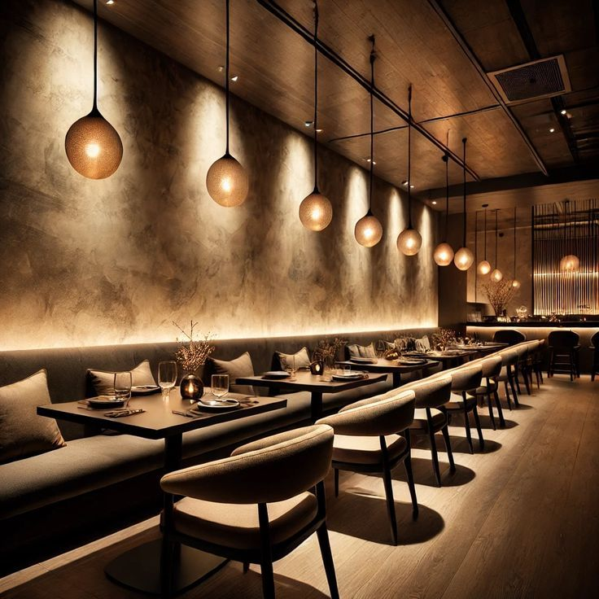
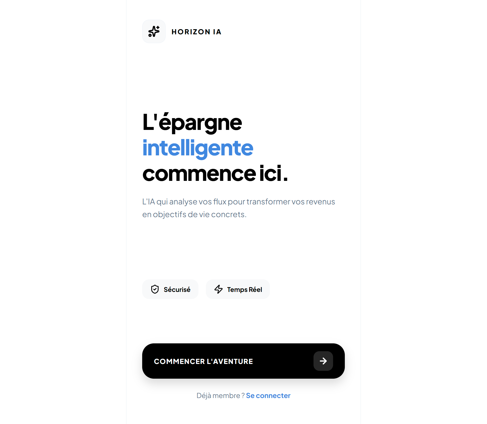
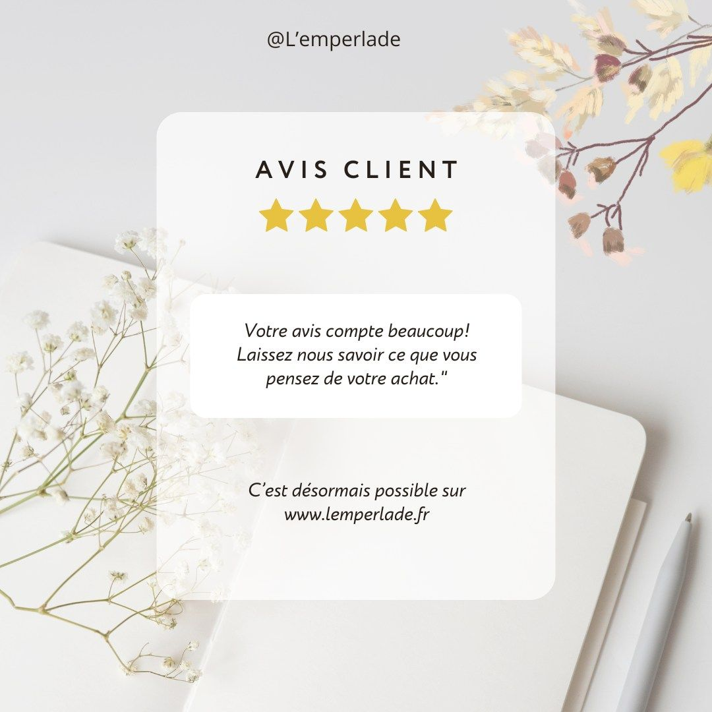
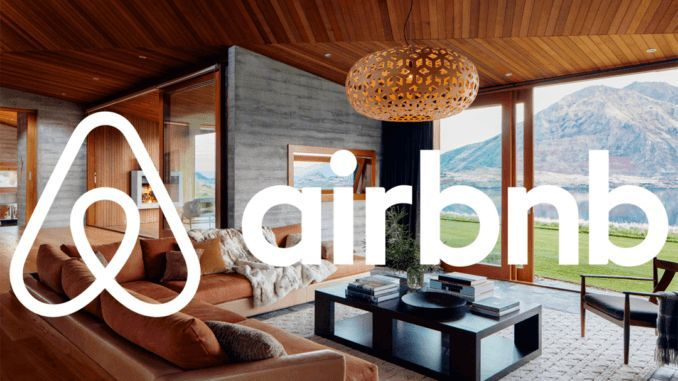

Langages de Programmation
Data, BI & Outils de Gestion

Étudiante en Bachelor Informatique à l'ECE Paris, je me spécialise en Data et Intelligence Artificielle. Je suis actuellement à la recherche d'une alternance à partir de septembre 2026 dans le cadre de mon Master pour poursuivre mon parcours et appliquer mes compétences sur des projets innovants.
Télécharger mon CVObjectif Alternance Master
Expertise technique
Projet Phare
Digitalisation agricole via la Computer Vision pour la détection de maladies. Un projet mêlant innovation technique et impact environnemental durable.
Prête à mettre mes compétences au service de vos projets Data.
Spécialisation dans le traitement du langage naturel (NLP) et l'analyse automatique de documents. Conception d'outils d'analyse de CV et de matching intelligent.
Conception d'interfaces dynamiques et réactives avec Laravel, PHP et MySQL. Maîtrise du design UI/UX sur Figma pour des plateformes modernes et intuitives.
Web scraping avancé avec Selenium et BeautifulSoup. Nettoyage, transformation et visualisation de données complexes avec Pandas et Numpy.
Capacité à collaborer efficacement sur des projets académiques complexes et engagement associatif.
Aisance relationnelle développée lors de l'accueil et du support aux bénéficiaires en milieu associatif.
Approche analytique acquise par une formation scientifique rigoureuse en mathématiques.
Capacité d'autoformation rapide sur de nouvelles technologies et méthodologies de travail.

Conception et développement sur mesure de sites vitrines et applications web/mobile pour des clients, en collaboration avec Thiaba.

Application intégrant la prévision d'épargne (régression linéaire), la détection des anomalies de dépenses (Z-Score) et un conseiller virtuel (API Claude).

Plateforme panafricaine utilisant l'IA pour optimiser les rendements agricoles et connecter les agriculteurs au marché B2B.
Une solution d'analyse de données utilisant Python pour explorer l'évolution des marchés financiers et l'impact des monnaies numériques.

Une plateforme intelligente de gestion d'avis utilisant l'IA pour l'analyse automatique de sentiments et la génération de scores thématiques.
Application des Support Vector Machines pour la classification de données complexes, incluant le prétraitement et l'optimisation des hyperparamètres.

Pilotage d'une plateforme d'hébergement via l'alliance des méthodologies Agile (Jira) et de la planification structurée (Gantt).
Exploiter l'Intelligence Artificielle comme un levier au service de la vie, de l'éducation et de notre planète.
Appliquer le Machine Learning pour assister le diagnostic médical et personnaliser les soins, rendant la médecine plus précise et accessible à tous.
Démocratiser l'accès à l'information en créant des outils IA adaptés aux enfants, afin de cultiver de bonnes habitudes numériques dès le plus jeune âge.
Concevoir des solutions technologiques durables, comme la digitalisation agricole, pour répondre aux enjeux écologiques et protéger nos ressources naturelles.
Je suis disponible pour discuter de votre projet ou d'une opportunité d'alternance.